Bow
Short film, 2022. Director, producer and editor.
Quinn is a young violinist losing her hearing. Before it is gone, she has one more audition to play.
Isaiah directed, produced and edited Bow, then took it through a festival run in 2022, where it won Best Director at the Albuquerque Film and Music Experience.
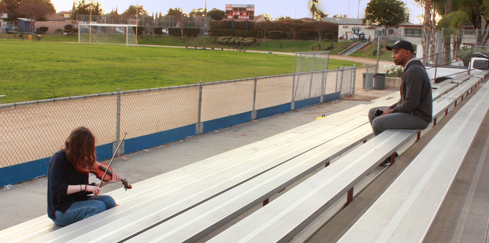
On Pittsburgh Today Live
Isaiah talks about Bow on KDKA's Pittsburgh Today Live, ahead of its screening at ReelAbilities Film Festival Pittsburgh in 2022.
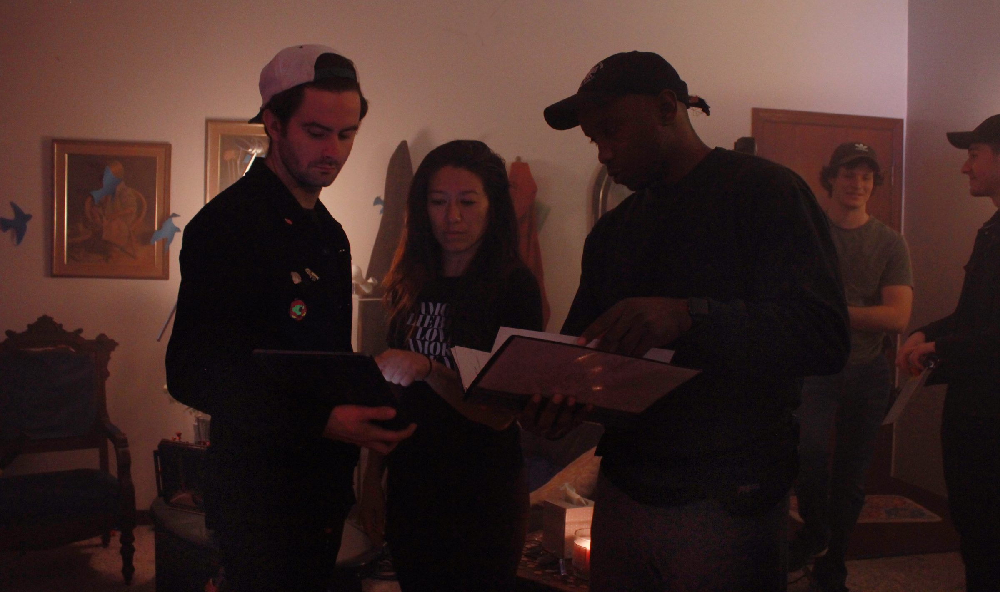
The Festival Run
- WinnerBest Director, Narrative ShortAlbuquerque Film and Music Experience
- WinnerAward of MeritOne-Reeler Short Film Competition
- NomineeBest Cinematography, Narrative ShortQueens World Film Festival
- Official SelectionCleveland International Film Festival
- Official SelectionReelAbilities Film Festival, Pittsburgh
- Official SelectionTallgrass Film Festival
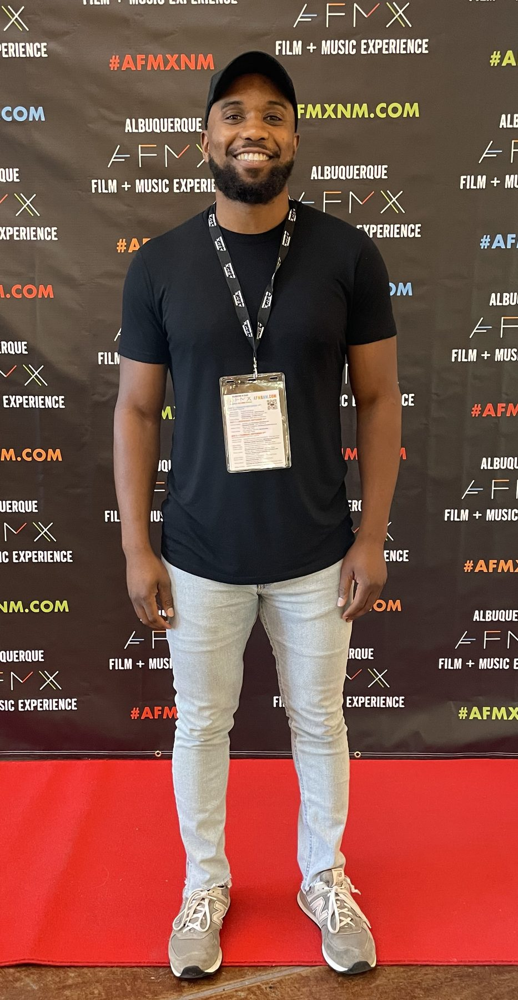
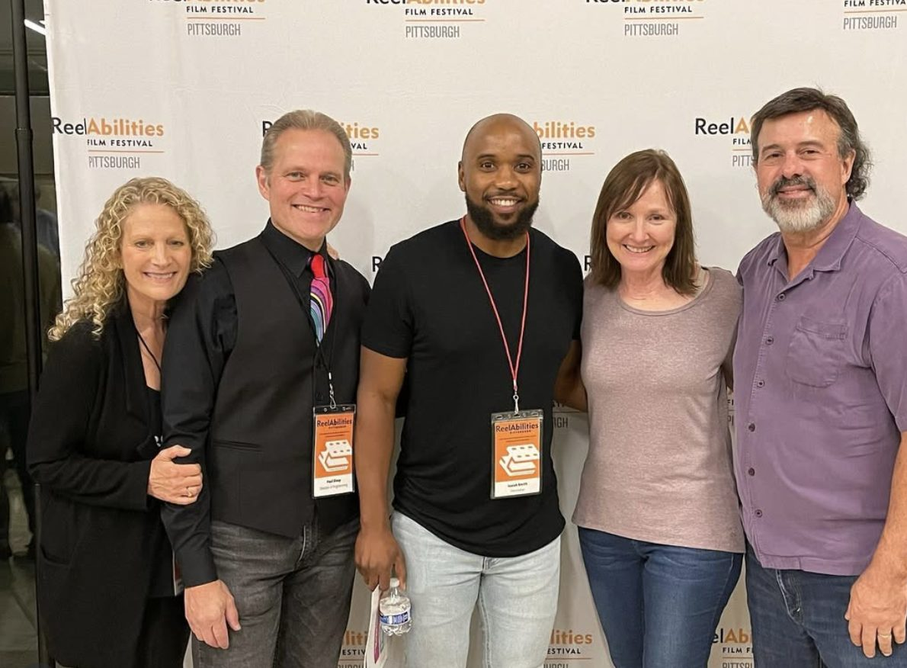
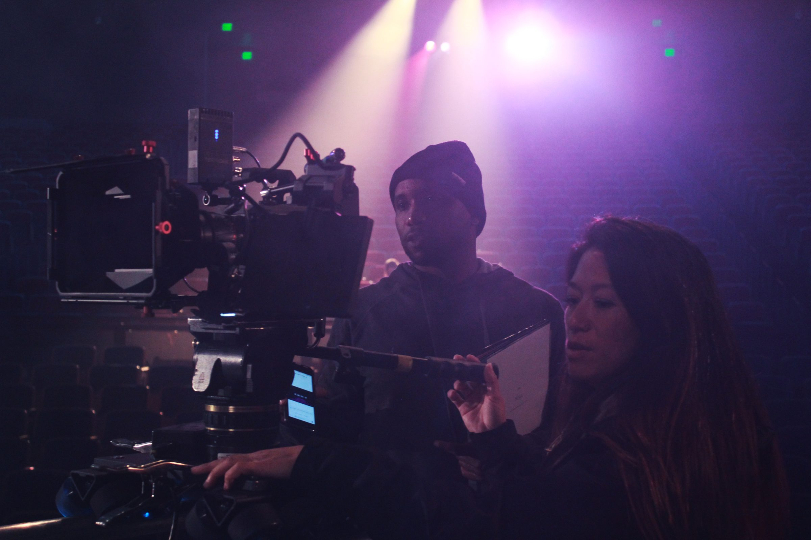
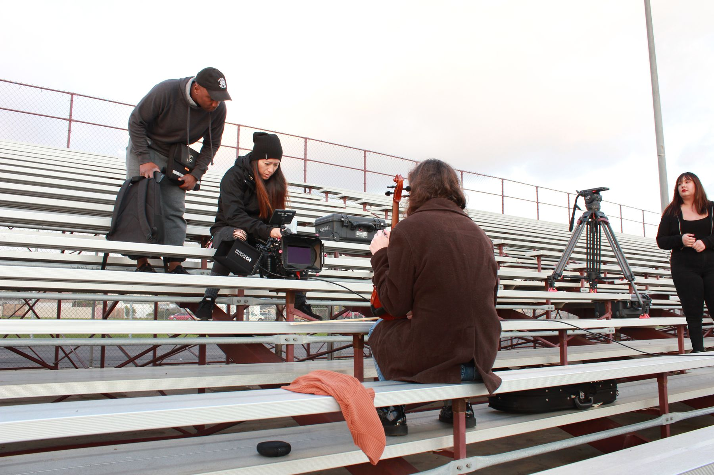
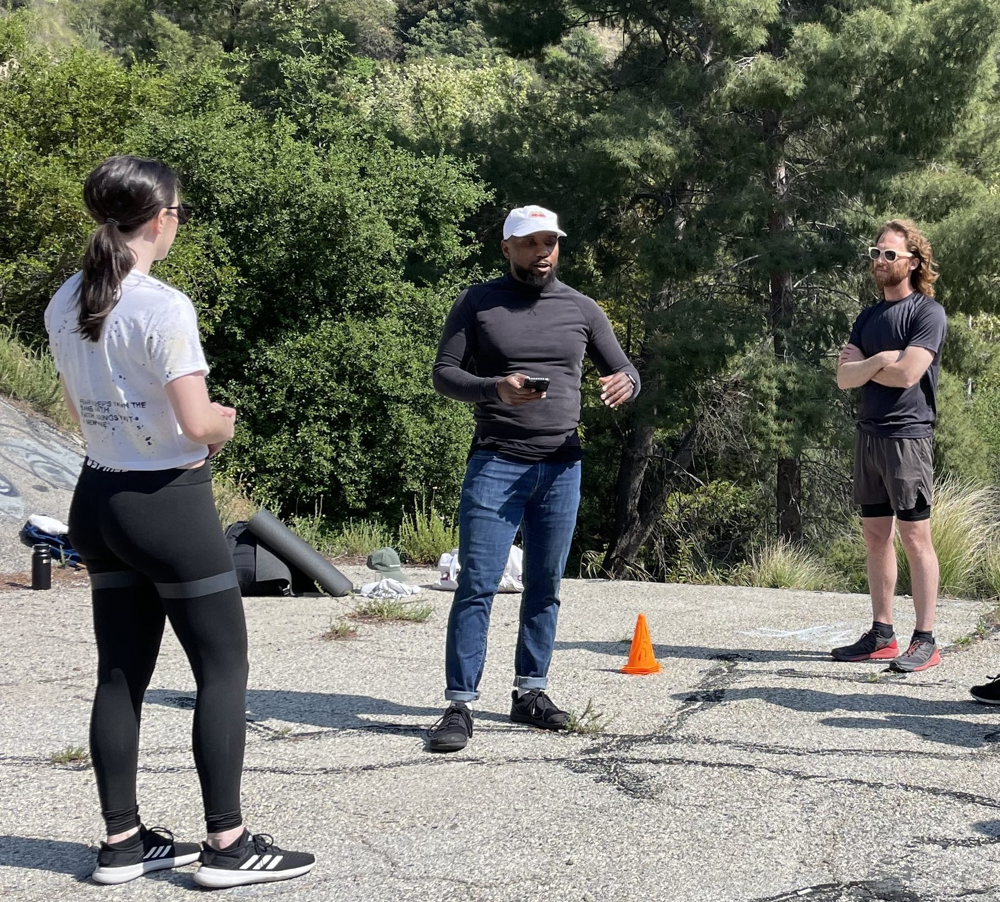
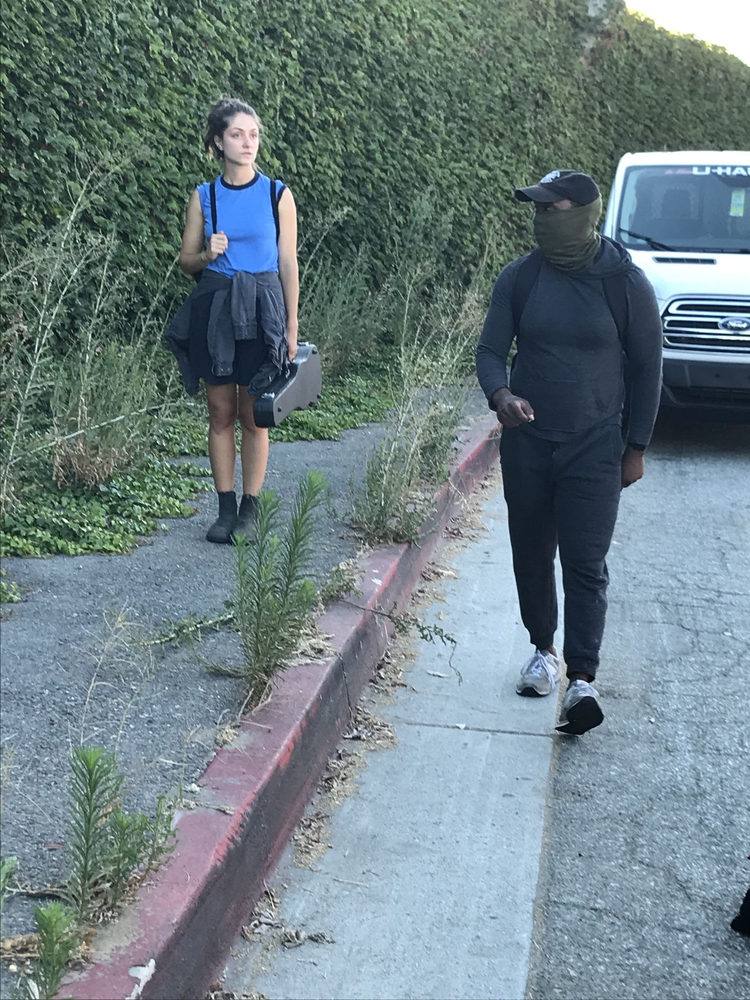
Behind the Camera
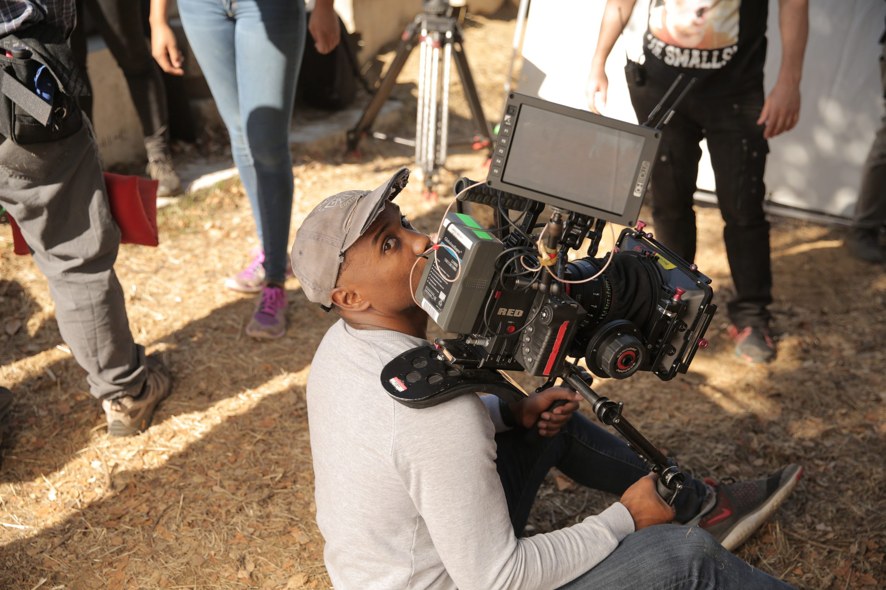
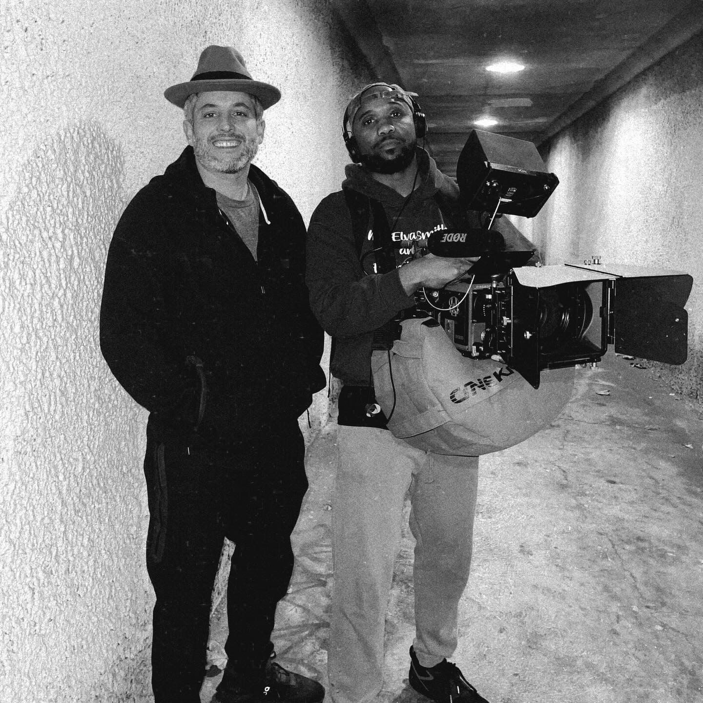
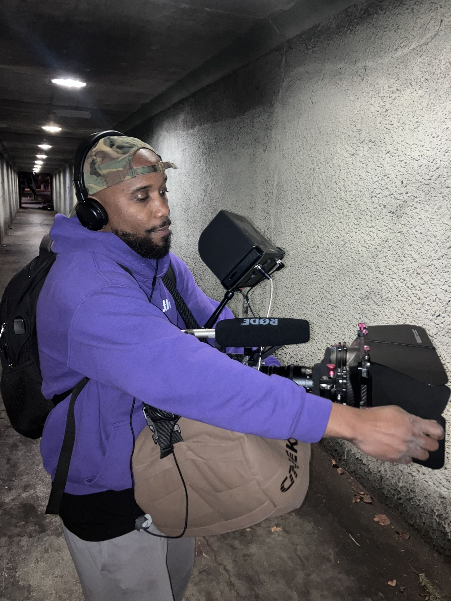
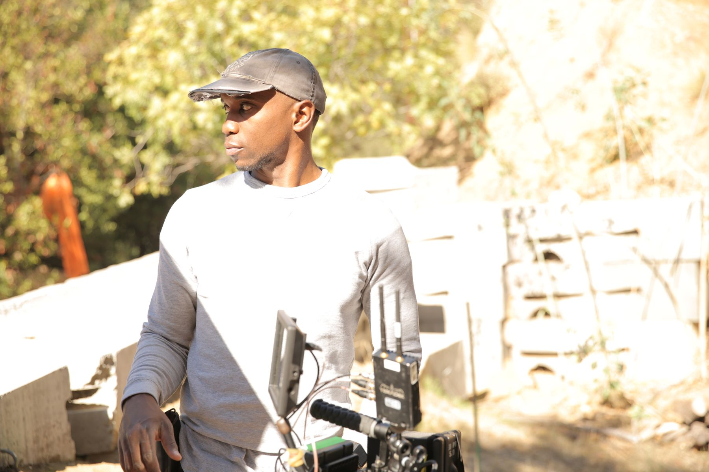
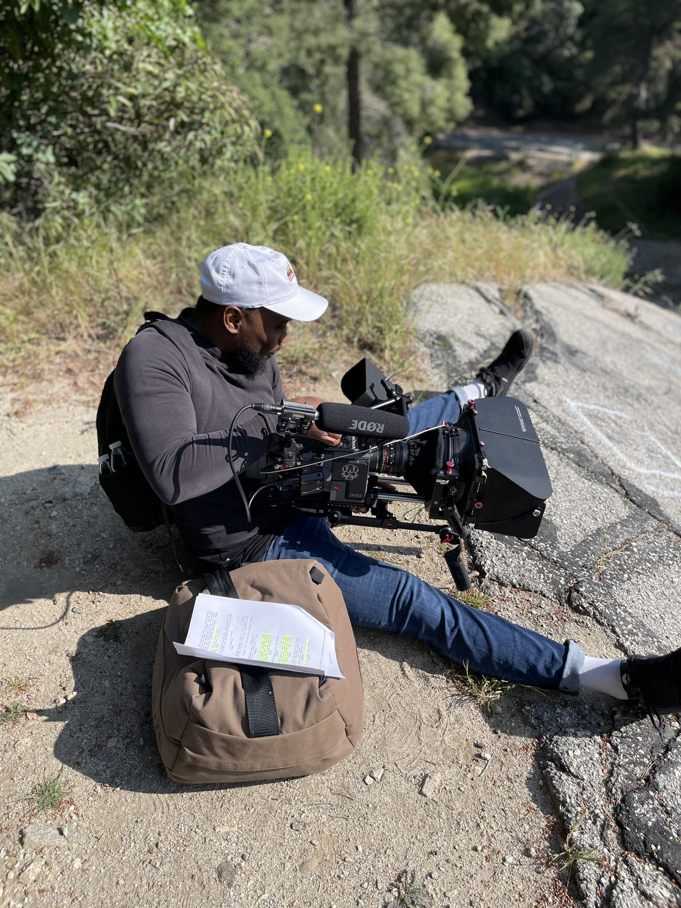